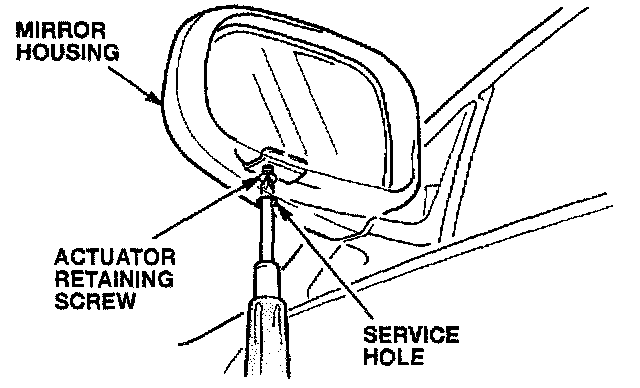
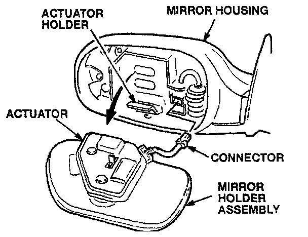
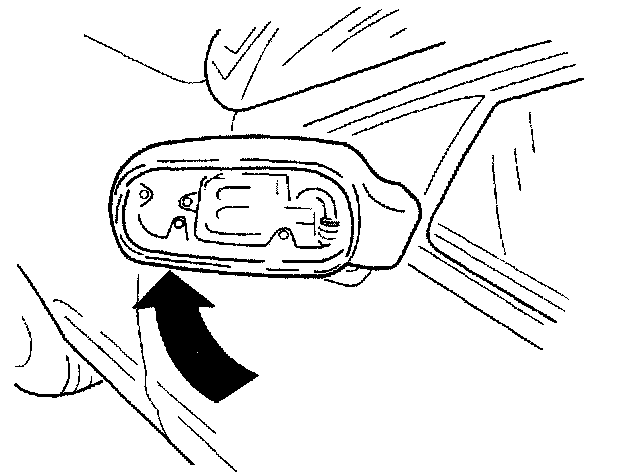
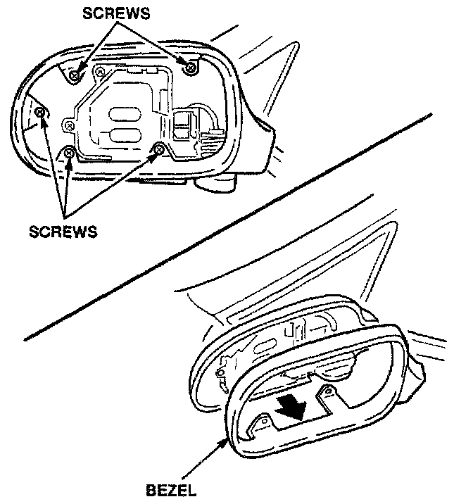
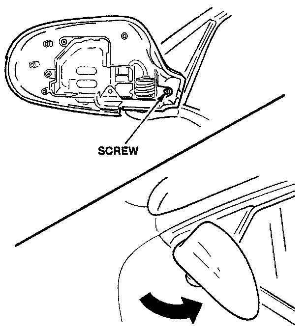
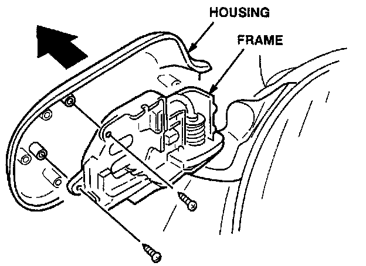
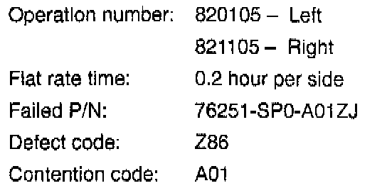

Door Mirror - Paint Peeling
September 14, 1993BULLETIN NO.
93-017
YEAR
1991-92
MODEL
LEGEND 4-DOOR
VIN APPLICATION
See VEHICLES AFFECTED
Paint Peeling From Door Mirror
PROBLEM
The paint is peeling off the door mirror housing.
VEHICLES AFFECTED
All 1991-92 4-door Standard Legends with satin black door mirrors.
CORRECTIVE ACTION
Replace the door mirror housing with the parts listed under PARTS INFORMATION.
1. Open the window of the front door.

2. Insert a # 2 Phillips screwdriver through the service hole in the bottom of the mirror housing. Loosen the actuator retaining screw, but do not remove it.

3. Remove the actuator and the mirror holder assembly from the mirror housing; then disconnect the connector.

4. Pivot the mirror housing towards the front of the car until it locks in place.

5. Remove the five screws that attach the bezel to the mirror housing. Pry the outer edge of the bezel away from the housing to release the clips on the pivot end.

6. Remove the screw at the pivot attaching the mirror housing to the frame. Pivot the housing all the way towards the side window until it locks in place.

7. Remove the last two screws attaching the mirror housing tot he frame; then remove the housing.
8. Install the new mirror housing and bezel in reverse order of removal.
PARTS INFORMATION
Left Mirror Housing: P/N 76251-SP0-A01ZJ
(Satin Black)
Right Mirror Housing: P/N 76201-SP0-A01ZN
(Satin Black)

WARRANTY CLAIM INFORMATION
In warranty:
The normal warranty applies.
Out of warranty:
Any repair performed after warranty expiration may be eligible for goodwill consideration by the District Service Manager or your Zone Office. You must request consideration, and get a decision, before starting work.

Disclaimer